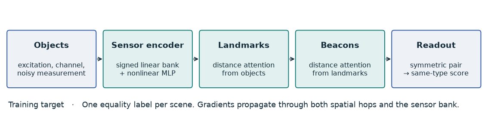

Learning curve
Training Validation
Experiment explorer
Two beacons each point, through a landmark, to an object. Can a neural network tell whether those objects share a hidden type?
A match helps when canonical weights win on canonical sensors and randomized weights win on randomized sensors. Both gains must clear the registered threshold across independent worlds.
| Endpoint | Worlds | Estimate | 95% interval | Decision |
|---|
Loading published measurements…
Training Validation
◆ Beacon ■ Landmark ● Object · color indicates measured response

Only the final same-type label supervises the network. Swapping one selected object's reading with a distractor preserves every position and reading in the scene while reversing the label.
Normalized squared error measures prediction error relative to the energy of the target. Each row is an independent least-squares experiment.
| Task | Teacher | Learner | Seed | Training inputs | NMSE |
|---|